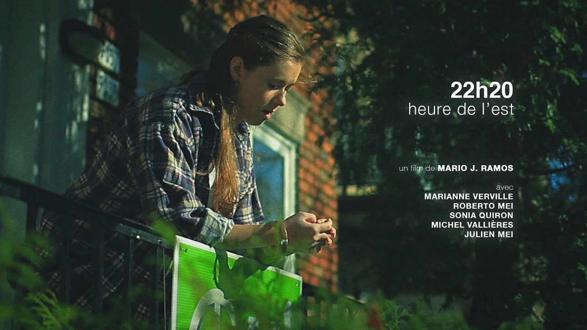

C'est un après-midi d'automne bien ordinaire pour Anne qui rentre de l'école. Une journée comme les autres pour l'adolescente. En fait, non, pas comme les autres, car c'est la veille de l'Halloween. Plus précisément, nous sommes le 30 octobre 1995, jour de référendum. Un court métrage produit par Babel Films, avec Marianne Verville.